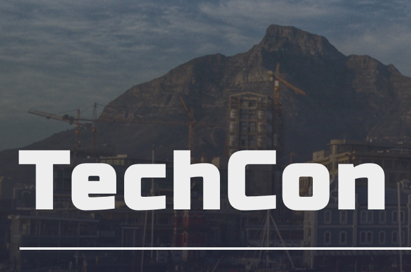

History
TechCon began in 2010 as a small gathering of technology enthusiasts. Over the years, it has grown into a global event attracting thousands of participants from across the tech industry. The conference has consistently provided a platform for sharing innovative ideas, groundbreaking research, and collaborative projects.
Mission
The mission of TechCon is to inspire, educate, and empower the global technology community. We aim to foster collaboration, encourage innovation, and provide opportunities for lifelong learning in the ever-evolving tech world.
Past Speakers
Dr. Ada Lovelace
A pioneer in computing, Dr. Lovelace has inspired generations of technologists with her vision of programming and analytical engines.

Alan Turing
Widely regarded as the father of modern computing, Alan Turing’s groundbreaking work laid the foundation for artificial intelligence and computer science.